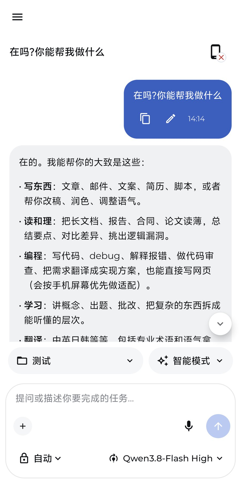
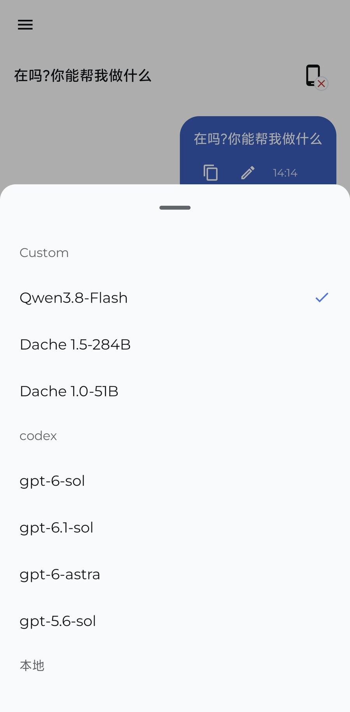
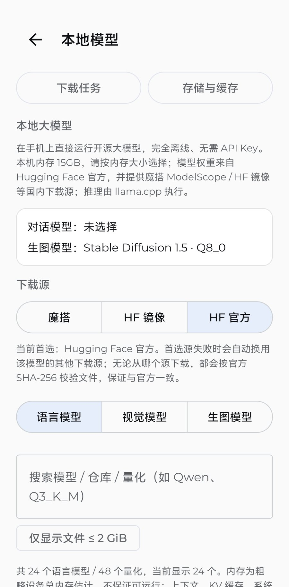
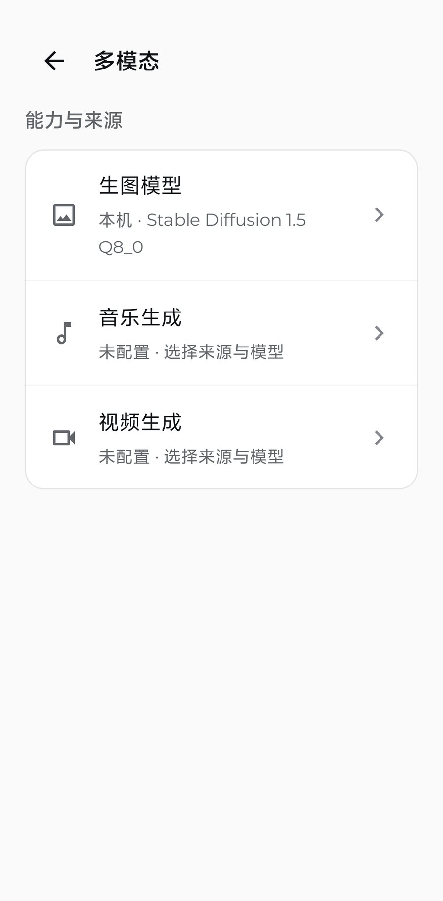

🖥️
远程连接电脑 DSH
局域网或同账号中继连接电脑端 DSH，随时继续桌面对话、查看任务进度，模型和项目上下文保持一致。
功能
连接电脑，或在手机上独立运行。
局域网或同账号中继连接电脑端 DSH，随时继续桌面对话、查看任务进度，模型和项目上下文保持一致。
不依赖电脑：手机直接接入 OpenAI / Anthropic 兼容供应商，或自定义 Base URL 与模型列表。
内置 llama.cpp 端侧推理，可下载或导入 GGUF 模型，离线也能对话；支持视觉模型与多模态输入。
内置 stable-diffusion.cpp，可选择本机生图模型，图片生成不必经过云端；也支持自定义 Images API。
基于 Android 无障碍服务的手机 Agent：观察界面、点击、输入、手势与截图，让模型替你操作手机。
支持 DSH Go 插件包（工作区、主题、技能等），像桌面端一样用插件扩展手机端能力。
Kotlin + Jetpack Compose 原生实现，直接调用 Android 无障碍、通知、分享与文件能力； 不需要在 Android 里安装 Ubuntu/Linux 模拟器，也不需要 root，安装即可使用。
截图
截图来自开发版，实际界面可能随版本变化。




快速开始
从 GitHub Releases 下载签名 APK，允许「安装未知来源应用」后安装。当前支持 arm64-v8a。
远程连接：在电脑端启用 DSH Go 互联插件，手机扫码或同账号配对；
独立使用：在「设置 → 手机端 API 服务」配置供应商，或下载本地模型。
新建会话即可聊天、调用工具、生图或让手机 Agent 执行任务。
首次安装后，按引导连接电脑端 DSH 或配置手机端 API 服务。
下载最新 APK如果按钮无法下载，请打开 Releases 页面 手动选择 APK。
FAQ
不需要。手机端可以独立使用自有 API 供应商，也可以下载本地 GGUF 模型离线推理。想继续电脑上的会话时再连接电脑端 DSH 即可。
不需要。DSHarness Go 是原生 Android 应用，直接调用系统能力，无需 Linux 模拟器、无需 root。
端侧大模型与生图引擎依赖 arm64 原生库，当前仅打包 arm64-v8a；绝大多数近几年的 Android 手机都支持。
本地模型、本机生图与本地缓存都在设备上完成；使用远程供应商或连接电脑时，数据会发送到对应的服务商/电脑。账号与配对令牌仅保存在本机加密存储中。
DSHarness Go 为专有软件，源码不公开，官方仅分发签名 APK。使用前请阅读使用条款。